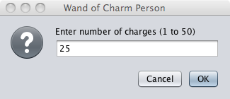

The Inventory tab is where you purchase & equip items that your character possesses. It is made up of two sub-tabs:
This sub-tab allows the purchasing and selling of armor, items, shields and weapons.
The left pane includes items that can be bought or customized. The "Available" drop-down menu lets you choose how to list the items.
The right pane includes the items your character currently has. If you right-click any of the items there you will get the option to "Move To" and "Copy To". Under each option there is a listing of all the other currently-loaded characters. You can then either move the item (sending the selected item to the selected character and removing it from the current character's list of equipment) or copy it (send a copy of the item to the selected character).
The "Order" column dictates the order the items get output to the character output sheet (only equipped items get output to the output sheets).
Items can be purchased by:
As you purchase items you will see the amount of money you have available in the lower right frame diminishes. The amount deducted is the price multiplied by the Buy Percentage
Items can be sold by:
As you sell items you will see the amount of money you have available in the lower right frame increases. The amount added is the price multiplied by the Sell Percentage
You can modify this total by editing the Gold: field.
The Allow Debt option enables PCGen to allow negative gold amounts to represent what the Character owes.
The Ignore Cost option allows items to be added or removed without effecting the gold value.
Pressing <Ctrl><f> or using the right click menu's Find item option allows for searching for items. The nearest match in the item list will be highlighted.

The charges a wand or similar item has left can be modified after purchasing the item by right clicking it in the right window and choosing Modify Charges.

To make an item Masterwork, Magical or change its properties (like take a regular set of plate mail and make it small-sized for a small sized PC), right click on it and choose Create custom item.
Note: The item needs to be "Masterwork" if a magical item is to be created.

To add new properties to the item, select them from the left hand pane and either double click or click the Add button. If the Property prerequisites are not met, it is shown in the default error color and it cannot be added.
Other than properties, the following can be modified:
Once all properties have been selected, you can either choose OK to add it to the item list or Buy to add it to the item list and add it to the characters possessions

The Equipment sub-tab helps you organize the gear your character owns as well as determining which weapons and armor are used and in what hands. This sub-tab allows the gear that was purchased to be equipped to the character. The pane on the upper-left contains the items that your character has purchased and the right pane shows the equipment that has been "equipped" as well as the location to which the gear has been equipped. You equip gear by selecting an item from the left hand frame and double clicking on it or clicking on the Equip Selected ;> button at the bottom right of the pane.
This Sub-tab allows the Gear that was purchased to be equipped to the character.

It also allows the creation of multiple equipment sets so you can print output sheets based on different weapon, armor and item combinations for your character.

Select locations for the items your character owns on the upper right frame. Some items are automatically "Equipped" to the appropriate locations, e.g. Armor, Shields, and magical items, if the locations are not already filled. Equipping all items to the appropriate location ensures that PCGen will give the appropriate benefit for using the items. Additionally, every item your character is carrying should be marked as "Carried" so your character's encumbrance will be figured correctly.

Weapons can be equipped as Single Handed, Two Handed and Both Hands. The equipped style determines what bonuses/penalties apply. Weapons that are carried will appear on the character sheet in the weapons section.

Some items are containers and can hold other items. This can be done by "equipping" the items to the containers directly.
Every item your character is carrying should be marked "Carried" so your encumbrance will be figured correctly. You can add additional equipment sets by typing in the name of an equipment set and clicking on the Add button (in the Upper right hand frame).